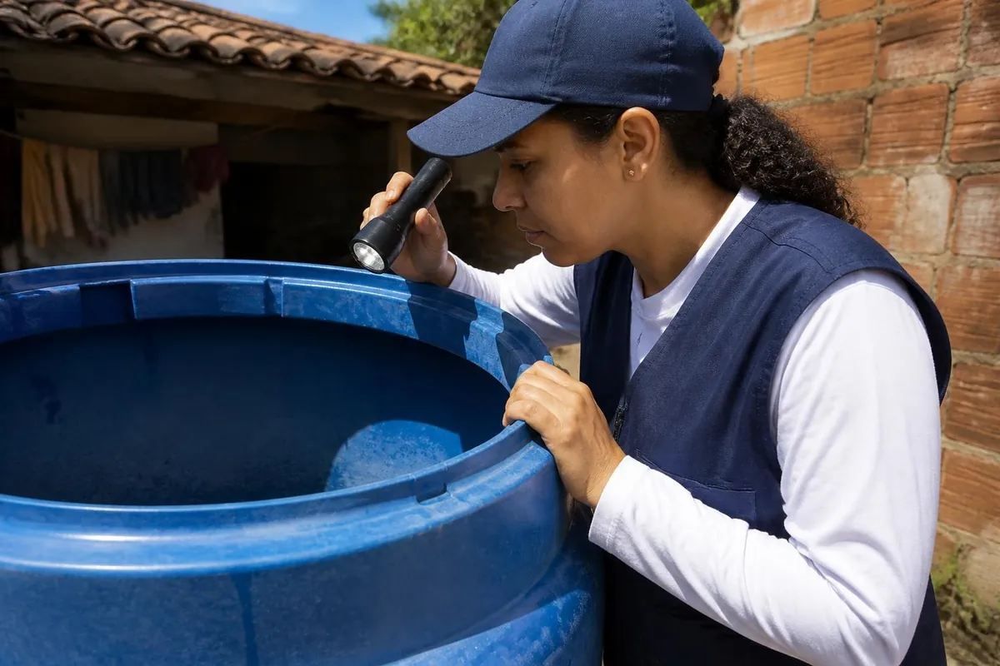
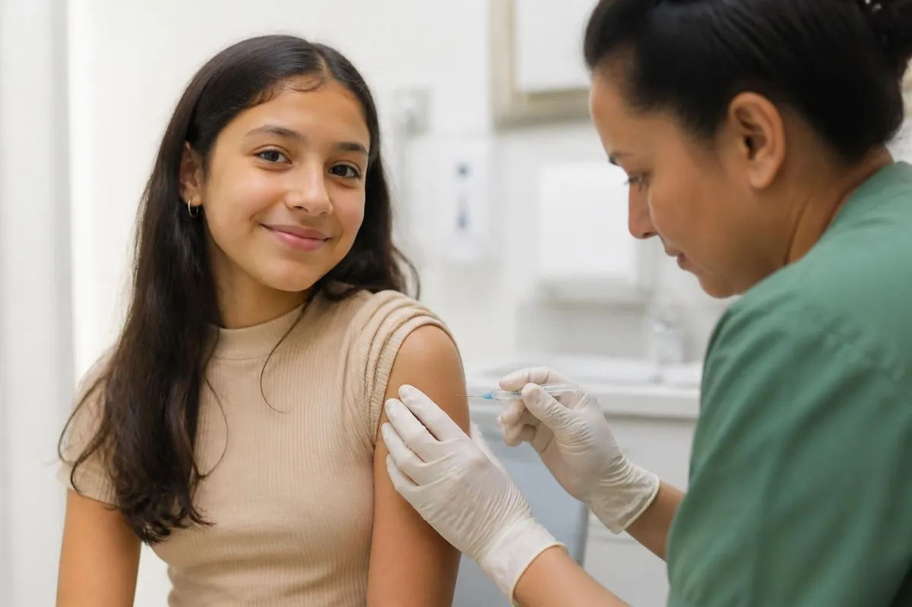
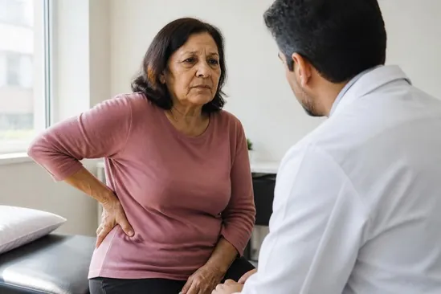
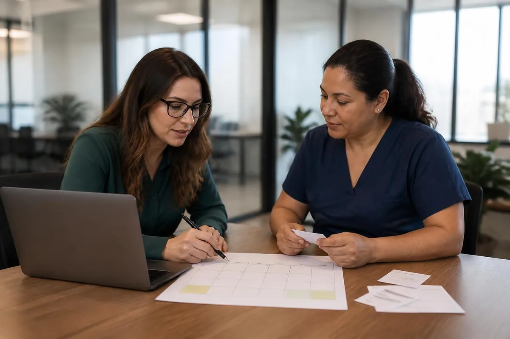
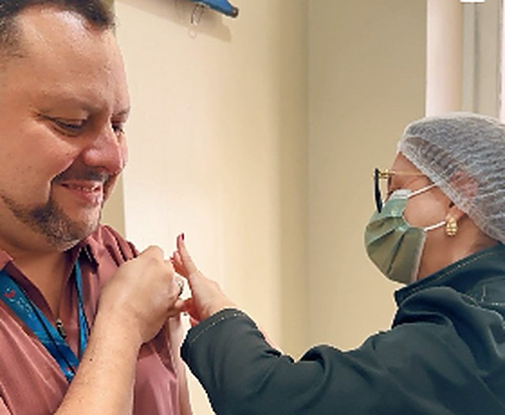

Blog
Textos curtos da nossa equipe sobre vacinas, doenças e cuidados, sempre a partir dos calendários da SBIm e do Ministério da Saúde.
Ceará passa de 15 mil casos de dengue em 2026, quase quatro vezes mais que em 2025
Os casos explodiram no meio do ano e já houve 27 mortes. Entenda o que puxou a alta e como chegar protegido à próxima quadra chuvosa.

Cerca de 1,8 mil cidades brasileiras estão em alerta ou risco por causa do Aedes aegypti
Quase metade dos municípios que fizeram o levantamento do mosquito está em alerta ou risco. No Nordeste, o criadouro mais comum é a água guardada em casa.

Vacina contra HPV reduz em quase 78% as consultas por lesões pré-cancerígenas em adolescentes
Estudo com dados do SUS mostra a queda entre jovens de 15 a 19 anos, a primeira geração que recebeu a vacina ainda na infância.

Herpes zóster cresce no Brasil: 33 mil atendimentos só no primeiro semestre de 2026
Os dados são do Ministério da Saúde. A vacina ainda não está no SUS para a população em geral, e um projeto aprovado no Senado quer mudar isso.
Vacina contra herpes zóster está associada a menos doenças do coração, mostra estudo na Nature Medicine
Pesquisadores compararam idosos que tomaram a vacina antiga e a recombinante. Quem recebeu a recombinante teve menos infarto, insuficiência cardíaca e AVC isquêmico.
Vacinação nas empresas ajuda a ampliar a imunização no Brasil
Com a cobertura vacinal abaixo da meta, levar a vacina até o local de trabalho virou uma forma de alcançar quem não vai ao posto.

Programa de vacinação na empresa: por que e como implementar
Uma lei de 2026 pede que o empregador informe os trabalhadores sobre as campanhas oficiais. Veja como ir além e montar um programa de vacinação.

A conta da chuva: por que começar a vacina da dengue em novembro
Duas doses, três meses entre elas. Quem começa em novembro termina o esquema antes do pico da quadra chuvosa.
Herpes zóster depois dos 50: o que é e como prevenir
Quem teve catapora carrega o vírus. Entenda por que o risco aumenta com a idade e o que a vacina faz.
Campanha de vacinação na empresa: o checklist do RH
Cinco passos para planejar, divulgar e registrar uma campanha com adesão real da equipe.
Por que a temperatura da vacina importa tanto
O que acontece entre a fábrica e o seu braço, e por que você não consegue ver se uma vacina estragou.
Por que a vacina da gripe é todo ano
O vírus muda, a vacina acompanha. E a proteção da dose do ano passado não dura para sempre.
Vacina no bebê: como deixar o momento mais tranquilo
O choro faz parte, mas dá para ajudar. O que fazer antes, durante e depois da vacina.
Nenhum texto encontrado. Tente outra palavra ou fale com a nossa enfermagem pelo WhatsApp.